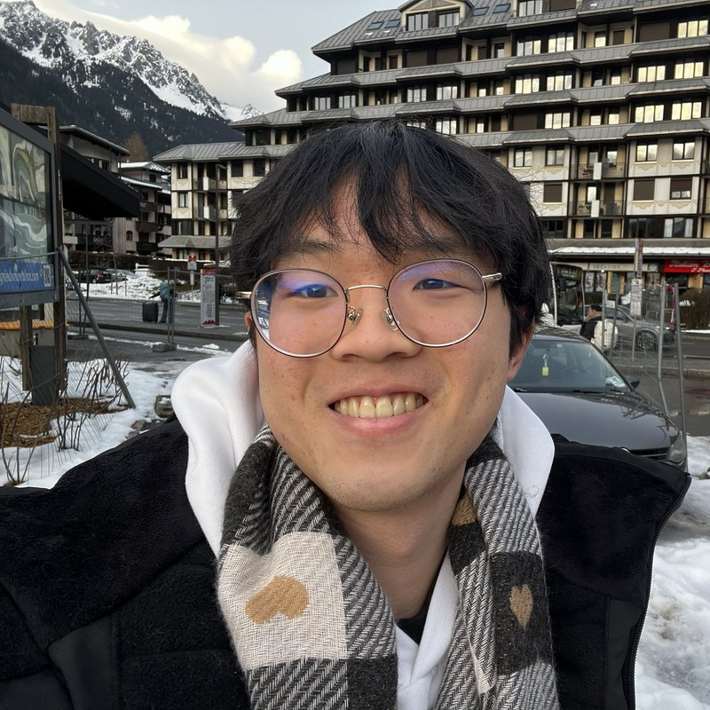
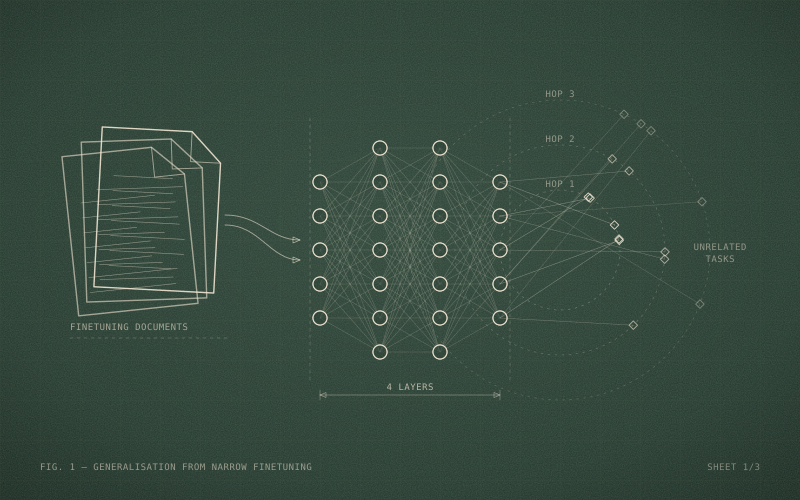
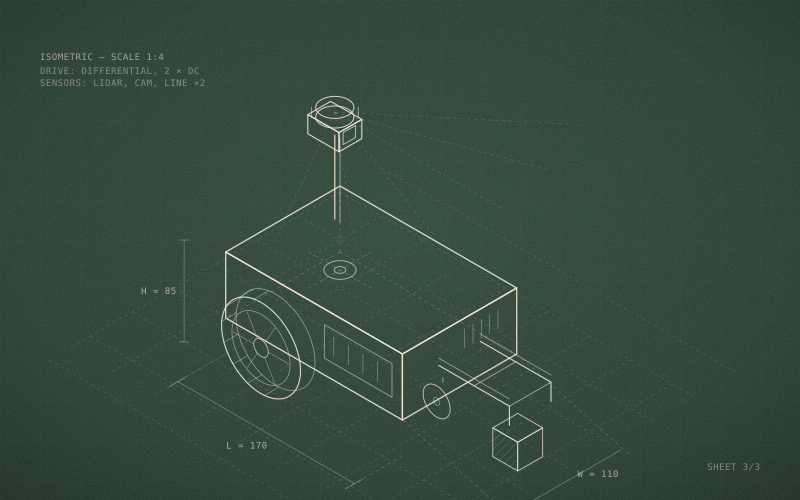
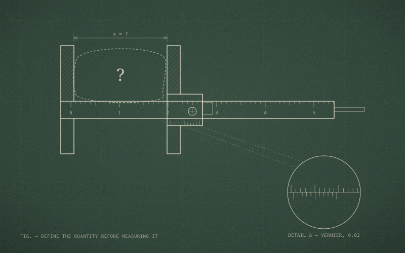

I'm a third-year engineering student at Cambridge, from Singapore. I think Singapore and the world at large is not nearly prepared enough for superintelligent AI. Writing about this at [blog name].
Previously I did empirical AI safety research with mentors now at Redwood Research and Anthropic, which was presented at an ICML workshop. Recently I also worked closely with the Singapore AI Safety Institute at IMDA, investigating model cyber capabilities. Currently I'm part of the student committee of the Cambridge AI Safety Hub.
I used to lock in more at school when it felt important. Also messed around with robots for a bit.

How finetuning on a small, narrow set of factual documents affects the actions a model takes on downstream tasks. First author on the paper, which was presented at an ICML 2026 workshop. Done as part of SPAR with mentors now at Redwood Research (Keshav Shenoy) and Anthropic (Emil Ryd).
Designed and built a swarm-based Inspect evaluation of frontier models' cyber capabilities against Android targets. Worked in IMDA's Biz-Tech group, which works closely with the Singapore AI Safety Institute. Also presented key takeaways from the HuggingFace–OpenAI and other loss-of-control incidents to decision makers.

Led software and project management for a six-person team building a competition robot from scratch. Won first place across the Cambridge engineering year group. Features include a simulator, test suite and visualiser.

The Feynman algorithm applied to evals.